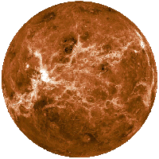
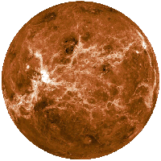
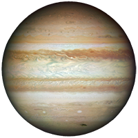
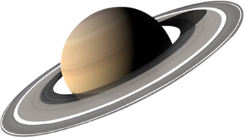
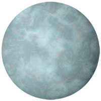
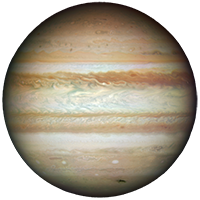
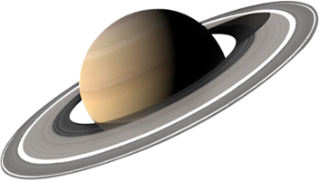
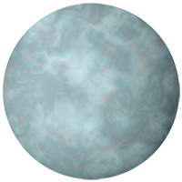

Solar Orbit of Planets
Hover over a planet name!
Click on a planet name!


 

 






The sun lies at the heart of the solar system, where it is by far the largest object. It holds 99.8 percent of the solar system's mass and is roughly 109 times the diameter of the Earth — about one million Earths could fit inside the sun. The visible part of the sun is roughly 10,000 degrees F (5,500 degrees C), while temperatures in the core reach more than 27 million degrees F (15 million degrees C), driven by nuclear reactions.
Mercury is the closest planet to the sun. As such, it circles the sun faster than all the other planets, which is why Romans named it after the swift-footed messenger god Mercury. The orbit of Mercury is the most eccentric of the planets in our Solar System. The planet has an orbital period of 87.969 Earth days.
Venus and Earth are often called twins because they are similar in size, mass, density, composition and gravity. However, the similarities end there. Venus is the hottest world in the solar system. The orbit of Venus is the most circular in the entire Solar System. In mathematical terms, the eccentricity of Venus is less than 0.01. A year on Venus lasts 223 days.
The Earth’s orbit around the Sun has many interesting characteristics. First, the speed of our orbit is 108,000 km/h. The planet travels 940 million km during one orbit. The Earth completes one orbit every 365.242199 mean solar days(that might help explain the need for a leap year). The planet’s distance from the Sun varies as it orbits. Actually, the Earth is never the same distance from the Sun from day to day.
The orbit of Mars is the second most eccentric in the Solar System. Only Mercury’s orbit is more eccentric. It takes Mars approximately 687 Earth days to complete on orbit. The orbit of a planet varies in relation to the gravitational influences of the bodies around it, so the eccentricity can change over time. AS recently as 1.35 million years ago, Mars was in a nearly circular orbit.
The orbit of Jupiter, like that of all the planets, is really elliptical instead of circular. At perihelion(closest approach) Jupiter comes within 741 million km, or 4.95 astronomical units(AU), of the Sun. Jupiter is the fifth planet from the Sun, but it is the third brightest object in the night sky here on Earth. Jupiter takes 11.86 Earth years, or 4331 Earth days to complete one orbit.
The orbit of Saturn lasts 29.7 years. In other words, during the time Saturn completes one full revolution around the Sun, Earth has gone through almost 30 years. The closest point of Saturn’s orbit is called its perihelion. At this point, Saturn is only 1.353 billion km or 9 astronomical units from the Sun (1 AU is the average distance from the Earth to the Sun).
The orbit of Uranus takes 84.3 year to complete one revolution around the Sun. In other words, 1 Uranian year is 84.3 Earth years. Uranus is unique among the planets in the Solar System because of its axial tilt. While Earth is tilted at a mere 23.5 degrees, Uranus has rolled over completely sideways, with an axial tilt of 99-degrees. This has a significant impact on the planet’s seasons. The north pole of Uranus experiences 42 years of complete darkness, followed by 42 years of sunlight, where the Sun never dips below in the horizon.
Neptune orbits the Sun at an average distance of 4.5 billion km. One interesting feature about the orbit of Neptune is the fact that Pluto’s very elliptical orbit sometimes brings it closer to the Sun. Back in the days when Pluto was still a planet, it would spend a few decades every orbit closer to the Sun. So Neptune was actually the most distant planet, and Pluto was closer. The last time this happened started in 1979, and ended in 1999. Of course, Pluto isn’t a planet any more, so Neptune’s orbit makes it the most distant planet.